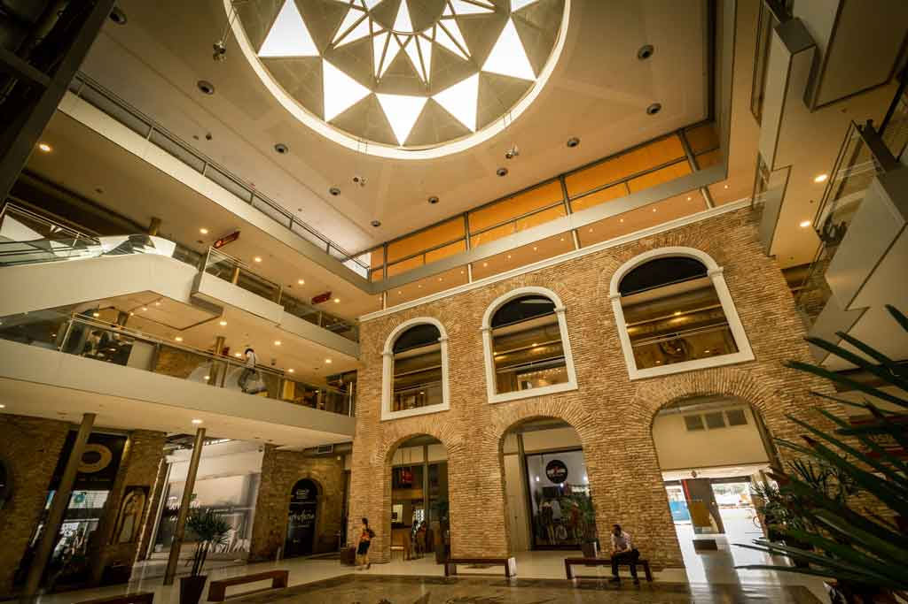
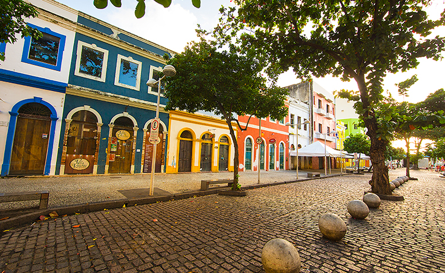
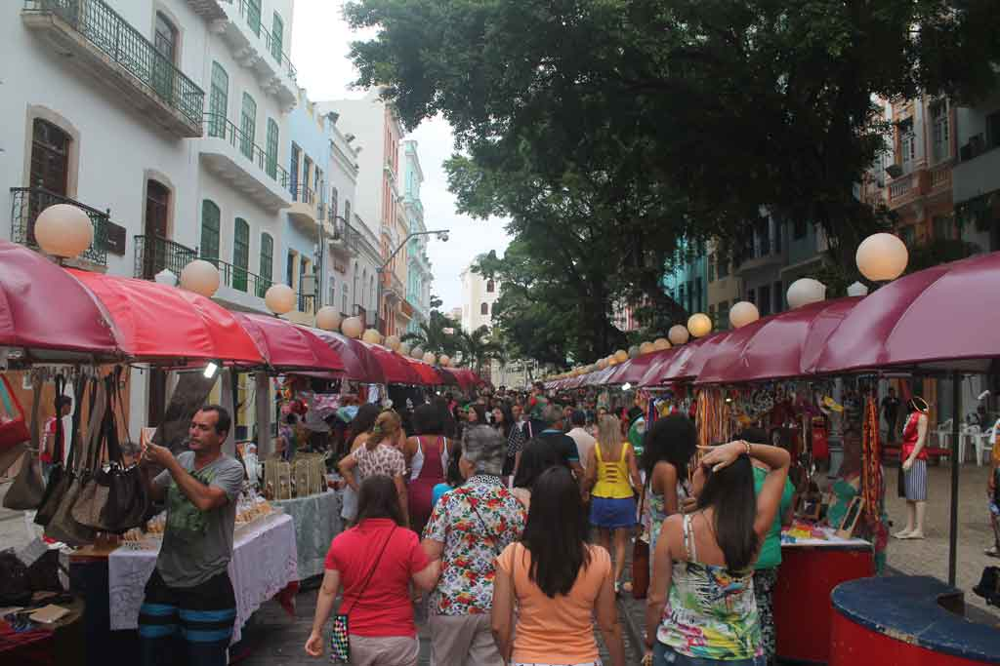

Shopping Paço Alfândega
Iniciando nosso roteiro no Recife Antigo, o Paço Alfândega é a nossa primeira parada. Você pode alugar um carro no Recife, seja no aeroporto ou em outro ponto e estacionar por lá. Também é por isso que iniciamos o roteiro por aqui, porque você vai poder deixar o carro em segurança. O local já foi um convento e a alfândega do Recife, mas hoje em dia, depois de ser reformado e revitalizado, se tornou um pequeno shopping. Mas não pense que é um shopping qualquer, porque lá você vai ver uma estrutura sem igual com áreas originais reveladas, peças do ceramista Francisco Brennand e um terraço com vista panorâmica do Rio Capibaribe.
Rua da Moeda
Após a visita ao shopping, pegue a Rua da Moeda, que está na frente. A rua tem esse nome por ter recebido ali, a casa da moeda da cidade, instalada pelos holandeses. Hoje em dia o local é um bar, que definitivamente vale uma paradinha para um refresco. A rua é exclusiva para pedestres, portanto aproveite para fazer fotos bacanas, principalmente porque lá fica a escultura de Chico Science, assim como alguns dos bares mais descolados da cidade. Muita coisa fica fechada na Rua da Moeda durante o dia, pois a rua é um destino para quem quer curtir a vida noturna do Recife Antigo. Apesar disso, se você passar por lá à noite, vai ver o burburinho dos bares e restaurantes que tocam música alternativa, pop e até jazz.
Feirinha do Bom Jesus
A Rua do Bom Jesus foi considerada uma das ruas mais bonitas do mundo. Além disso, ela é uma das ruas mais antigas do Recife. Por lá você vai encontrar alguns dos prédios mais importantes, portanto descubra a história do Recife Antigo a fundo. Aos domingos, a Rua do Bom Jesus ganha uma feirinha típica com artesanato local, barraquinhas de comida, artesanato e música aos fins de tarde. A feirinha é bem familiar, as crianças aproveitam para brincar e os pais vão às compras ou relaxam num bar ou restaurante. Além disso, dá para fazer um lanche e experimentar algumas das comidas típicas de Pernambuco que são deliciosas.